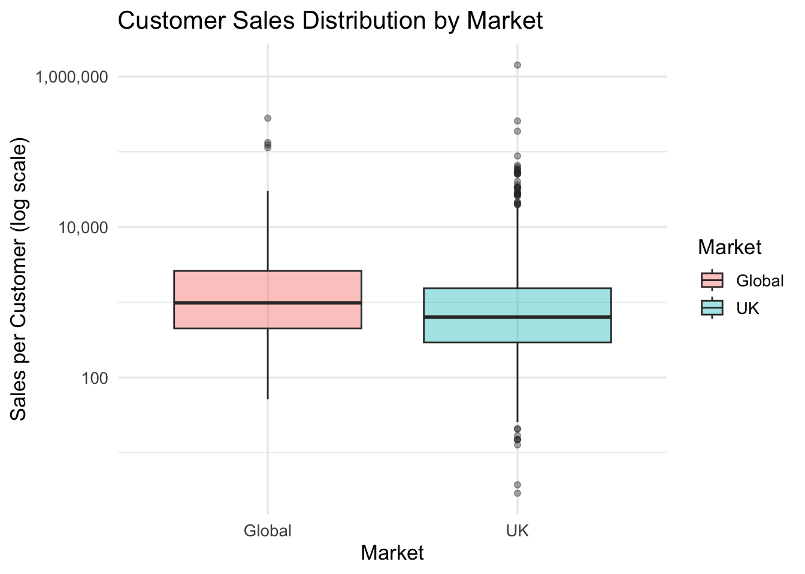
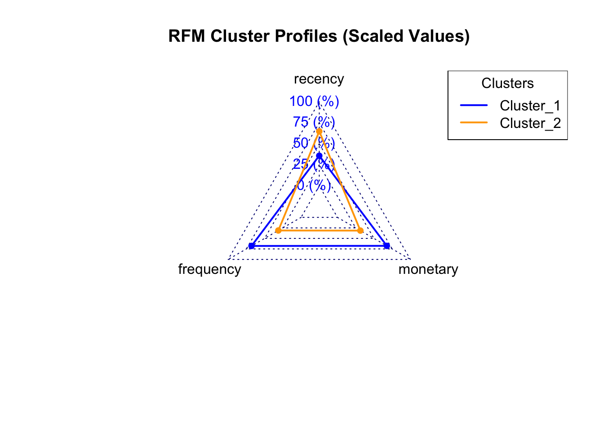

Hierarchical Cluster Analysis with Tidymodels on Retail Data
Customer segmentation is one of the primary components of marketing strategy, informing promotional offers, personalized communications and audience signals on paid media platforms. In this study, we run a hierarchical cluster analysis using the Tidymodels package in R, to segment the customers of a real UK-based a online retail store.
1 Data Description
The data set is downloaded from UCI Machine Learning Repository and is sourced from a 2012 academic paper on data mining by Chen et al 1. The company observed sells gifts for various occasions and the majority of its customers consist of wholesalers.
| Variable Name | Role | Type | Description | Units |
|---|---|---|---|---|
| InvoiceNo | ID | Categorical | a 6-digit integral number uniquely assigned to each transaction. If this code starts with letter ‘c’, it indicates a cancellation | |
| StockCode | ID | Categorical | a 5-digit integral number uniquely assigned to each distinct product | |
| Description | Feature | Categorical | product name | |
| Quantity | Feature | Integer | the quantities of each product (item) per transaction | |
| InvoiceDate | Feature | Date | the day and time when each transaction was generated | |
| UnitPrice | Feature | Continuous | product price per unit | sterling |
| CustomerID | Feature | Categorical | a 5-digit integral number uniquely assigned to each customer | |
| Country | Feature | Categorical | the name of the country where each customer resides |
2 Load Packages & Data
We will use the Tidyverse package for data processing. The dataset is in a tidy format, with each variable represented as a column and each observation as a row.
| InvoiceNo | StockCode | Description | Quantity | InvoiceDate | UnitPrice | CustomerID | Country |
|---|---|---|---|---|---|---|---|
| 536365 | 85123A | WHITE HANGING HEART T-LIGHT HOLDER | 6 | 2010-12-01 08:26:00 | 2.55 | 17850 | United Kingdom |
| 536365 | 71053 | WHITE METAL LANTERN | 6 | 2010-12-01 08:26:00 | 3.39 | 17850 | United Kingdom |
| 536365 | 84406B | CREAM CUPID HEARTS COAT HANGER | 8 | 2010-12-01 08:26:00 | 2.75 | 17850 | United Kingdom |
| 536365 | 84029G | KNITTED UNION FLAG HOT WATER BOTTLE | 6 | 2010-12-01 08:26:00 | 3.39 | 17850 | United Kingdom |
| 536365 | 84029E | RED WOOLLY HOTTIE WHITE HEART. | 6 | 2010-12-01 08:26:00 | 3.39 | 17850 | United Kingdom |
| 536365 | 22752 | SET 7 BABUSHKA NESTING BOXES | 2 | 2010-12-01 08:26:00 | 7.65 | 17850 | United Kingdom |
For data exploration purposes, I will be adding a sales variable to show the amount collected from each transaction in pounds.
3 Data Exploration
We have 406829 observations stored in our data set, each representing the purchase or refund of a stock ID. There are 18287 unique customers across 37 countries. The data set covers a period from 01/12/2010 to 09/12/2011.
Code
skimr::skim(retail)| Name | retail |
| Number of rows | 541909 |
| Number of columns | 9 |
| _______________________ | |
| Column type frequency: | |
| character | 4 |
| numeric | 4 |
| POSIXct | 1 |
| ________________________ | |
| Group variables | None |
Variable type: character
| skim_variable | n_missing | complete_rate | min | max | empty | n_unique | whitespace |
|---|---|---|---|---|---|---|---|
| InvoiceNo | 0 | 1 | 6 | 7 | 0 | 25900 | 0 |
| StockCode | 0 | 1 | 1 | 12 | 0 | 4070 | 0 |
| Description | 1454 | 1 | 1 | 35 | 0 | 4211 | 0 |
| Country | 0 | 1 | 3 | 20 | 0 | 38 | 0 |
Variable type: numeric
| skim_variable | n_missing | complete_rate | mean | sd | p0 | p25 | p50 | p75 | p100 | hist |
|---|---|---|---|---|---|---|---|---|---|---|
| Quantity | 0 | 1.00 | 9.55 | 218.08 | -80995.00 | 1.00 | 3.00 | 10.00 | 80995.0 | ▁▁▇▁▁ |
| UnitPrice | 0 | 1.00 | 4.61 | 96.76 | -11062.06 | 1.25 | 2.08 | 4.13 | 38970.0 | ▁▇▁▁▁ |
| CustomerID | 135080 | 0.75 | 15287.69 | 1713.60 | 12346.00 | 13953.00 | 15152.00 | 16791.00 | 18287.0 | ▇▇▇▇▇ |
| Sales | 0 | 1.00 | 17.99 | 378.81 | -168469.60 | 3.40 | 9.75 | 17.40 | 168469.6 | ▁▁▇▁▁ |
Variable type: POSIXct
| skim_variable | n_missing | complete_rate | min | max | median | n_unique |
|---|---|---|---|---|---|---|
| InvoiceDate | 0 | 1 | 2010-12-01 08:26:00 | 2011-12-09 12:50:00 | 2011-07-19 17:17:00 | 23260 |
There are some transactions with 0 sterling value, which may have been the result of an offer such as buy one, get one or a complementary addition to the order. The max and minimum quantity are respectively 80995 and -80995, suggesting there are substantial refunds among these transactions.
The dataset also has missing data in the Customer ID column.
Code
summary(retail) InvoiceNo StockCode Description Quantity
Length:541909 Length:541909 Length:541909 Min. :-80995.00
Class :character Class :character Class :character 1st Qu.: 1.00
Mode :character Mode :character Mode :character Median : 3.00
Mean : 9.55
3rd Qu.: 10.00
Max. : 80995.00
InvoiceDate UnitPrice CustomerID
Min. :2010-12-01 08:26:00.00 Min. :-11062.06 Min. :12346
1st Qu.:2011-03-28 11:34:00.00 1st Qu.: 1.25 1st Qu.:13953
Median :2011-07-19 17:17:00.00 Median : 2.08 Median :15152
Mean :2011-07-04 13:34:57.16 Mean : 4.61 Mean :15288
3rd Qu.:2011-10-19 11:27:00.00 3rd Qu.: 4.13 3rd Qu.:16791
Max. :2011-12-09 12:50:00.00 Max. : 38970.00 Max. :18287
NA's :135080
Country Sales
Length:541909 Min. :-168469.60
Class :character 1st Qu.: 3.40
Mode :character Median : 9.75
Mean : 17.99
3rd Qu.: 17.40
Max. : 168469.60
“DOTCOM POSTAGE” is the top product in terms of overall sales, followed by “REGENCY CAKESTAND”
Code
| Description | Sales |
|---|---|
| DOTCOM POSTAGE | 206245.48 |
| REGENCY CAKESTAND 3 TIER | 164762.19 |
| WHITE HANGING HEART T-LIGHT HOLDER | 99668.47 |
| PARTY BUNTING | 98302.98 |
| JUMBO BAG RED RETROSPOT | 92356.03 |
| RABBIT NIGHT LIGHT | 66756.59 |
| POSTAGE | 66230.64 |
| PAPER CHAIN KIT 50’S CHRISTMAS | 63791.94 |
| ASSORTED COLOUR BIRD ORNAMENT | 58959.73 |
| CHILLI LIGHTS | 53768.06 |
UK is the biggest market, followed by Netherlands.
Code
| Country | Sales |
|---|---|
| United Kingdom | 8187806.36 |
| Netherlands | 284661.54 |
| EIRE | 263276.82 |
| Germany | 221698.21 |
| France | 197403.90 |
| Australia | 137077.27 |
| Switzerland | 56385.35 |
| Spain | 54774.58 |
| Belgium | 40910.96 |
| Sweden | 36595.91 |
Global markets only account for 16% of total sales.
Code
retail %>%
mutate(Market = if_else(Country == "United Kingdom", "UK", "Global")) %>%
group_by(Market) %>%
summarise(Sales = sum(Sales)) %>%
ungroup() %>%
mutate(Perc_of_Sales = Sales / sum(Sales)) %>%
ggplot(aes(x = Market, y = Sales, fill = Market)) +
geom_col() +
geom_text(aes(label = percent(Perc_of_Sales, accuracy = 0.1)),
vjust = -0.5, size = 5) +
scale_y_continuous(labels = comma) +
labs(
title = "Sales Distribution by Market",
x = "Market",
y = "Total Sales",
fill = "Market"
) +
theme_minimal(base_size = 14) 
Likewise, the number of customers in the UK are 10 times the number of customers in Global. Expectedly, the mean and median are quite far from each other, indicating the presence of large outliers.
Code
retail %>%
group_by(CustomerID, Country) %>%
summarise(Sales_per_Customer = sum(Sales, na.rm = TRUE), .groups = "drop") %>%
mutate(Market = if_else(Country == "United Kingdom", "UK", "Global")) %>%
group_by(Market) %>%
summarise(
Customers = n_distinct(CustomerID),
mean_sales_per_customer = mean(Sales_per_Customer, na.rm = TRUE),
median_sales_per_customer = median(Sales_per_Customer, na.rm = TRUE)
)| Market | Customers | mean_sales_per_customer | median_sales_per_customer |
|---|---|---|---|
| Global | 423 | 3561.510 | 964.755 |
| UK | 3951 | 2072.338 | 627.130 |
5% of customers comprise over 50% of sales in both regions.
Code
retail %>%
group_by(CustomerID, Country) %>%
summarise(Sales_per_Customer = sum(Sales, na.rm = TRUE), .groups = "drop") %>%
mutate(Market = if_else(Country == "United Kingdom", "UK", "Global")) %>%
group_by(Market) %>%
mutate(percentile = ntile(Sales_per_Customer, 100)) %>%
summarise(top_5_share = sum(Sales_per_Customer[percentile > 95]) / sum(Sales_per_Customer))| Market | top_5_share |
|---|---|
| Global | 0.5711857 |
| UK | 0.5507178 |
According to this boxplot, these are indeed a group of customers that deviate greatly from the median in terms of sales volume.
Code
retail %>%
group_by(CustomerID, Country) %>%
summarise(Sales_per_Customer = sum(Sales, na.rm = TRUE), .groups = "drop") %>%
mutate(Market = if_else(Country == "United Kingdom", "UK", "Global")) %>%
ggplot(aes(x = Market, y = Sales_per_Customer, fill = Market)) +
geom_boxplot(alpha = 0.4) +
scale_y_log10(labels = comma) +
scale_size_continuous(range = c(1, 10), guide = "none") +
labs(
title = "Customer Sales Distribution by Market",
x = "Market",
y = "Sales per Customer (log scale)"
) +
theme_minimal(base_size = 13)
4 Hierarchical Cluster Analysis
Data exploration showed that we have some very large wholesale customers that undoubtedly have great value to us. Still, there is room for further exploration via unsupervised learning, taking recency and frequency of of orders alongside order value to look for more granular segments in our customer base.
Data Preparation
Since we want to analyze customers, we will be removing the observations with missing customer ID from the cluster data set. Around 100,000 rows are missing a customer ID, which may lead to valuable data loss. However, seeing there is no way of connecting those transactions to an individual, they will have to be removed.
Each customer will be assigned RFM (recency, frequency, monetary) scores based on the recency of their last transaction, number of invoices generated and the volume of sales.
Code
# define analysis date (last date in dataset)
cutoff_date <- max(retail$InvoiceDate, na.rm = TRUE)
rfm <- retail %>%
filter(!is.na(CustomerID)) %>% # remove transactions missing customerID
group_by(CustomerID) %>%
summarise(
recency = as.numeric(cutoff_date - max(InvoiceDate)), # number of days since last transaction
frequency = n_distinct(InvoiceNo), # number of transactions
monetary = sum(Sales) # total spending
) %>%
ungroup()A quick look at histograms reveals all three of these RFM variables are right-skewed.


We normalize them by first reducing skewness with log transformation to compress large value and make data more symmetric. Then, we rescale them to ensure all variables are on a comparable scale, which is important for distance-based methods like hyerarchical clustering.
Creating Clusters
The Elbow Method shows k = 2 offers the most distinct clustering, after which there is a steady drop.
Code
fviz_nbclust(rfm[, c("recency", "frequency", "monetary")],
FUN = hcut, # hierarchical clustering
method = "wss") +
labs(subtitle = "Elbow Method")
Code
k_values <- 1:10
wss_values <- sapply(k_values, function(k) {
model <- hclust(dist(rfm[, c("recency", "frequency", "monetary")]),
method = "ward.D2")
groups <- cutree(model, k)
# Compute within-cluster sum of squares manually
sum(sapply(unique(groups), function(g) {
cluster_data <- rfm[groups == g, c("recency", "frequency", "monetary")]
sum(scale(cluster_data, scale = FALSE)^2)
}))
})
elbow_df <- data.frame(k = k_values, WSS = wss_values)
elbow_df| k | WSS |
|---|---|
| 1 | 12948.000 |
| 2 | 6793.457 |
| 3 | 5620.338 |
| 4 | 4599.952 |
| 5 | 3820.183 |
| 6 | 3378.954 |
| 7 | 2986.388 |
| 8 | 2670.212 |
| 9 | 2528.867 |
| 10 | 2390.305 |
Silhouette Method confirms k = 2 is ideal for forming distinct segments.
Code
fviz_nbclust(
rfm[, c("recency", "frequency", "monetary")],
FUN = hcut, # hierarchical clustering
method = "silhouette",
hc_method = "ward.D2"
) +
labs(title = "Silhouette Method for Optimal Number of Clusters")
Code
# Define the range of k values you want to test
k_values <- 2:6
# Compute silhouette average width for each k
sil_scores <- sapply(k_values, function(k) {
model <- hcut(rfm[, c("recency", "frequency", "monetary")],
k = k, hc_method = "ward.D2")
model$silinfo$avg.width
})
# Put results in a tidy data frame
sil_df <- data.frame(k = k_values, silhouette = sil_scores)
sil_df| k | silhouette |
|---|---|
| 2 | 0.4013994 |
| 3 | 0.3331469 |
| 4 | 0.2464909 |
| 5 | 0.2494433 |
| 6 | 0.2393687 |
Using Tidymodels, we cut the dendrogram into 2 final clusters with Ward’s method to produce compact, roughly spherical clusters. Tidyclust will treat the result as a partitioning model, meaning every observation belongs to exactly one cluster.
Code
RecipeCustSeg <- recipe(~ recency + frequency + monetary, rfm)
ModelDesignClust <- hier_clust(num_clusters = 2,
linkage_method = "ward.D") %>%
set_engine("stats") %>%
set_mode("partition")
WFModelClust <- workflow() %>%
add_model(ModelDesignClust) %>%
add_recipe(RecipeCustSeg) %>%
fit(rfm)
ModelTrainedClust <- extract_fit_engine(WFModelClust)
DataCustSegWithAssignm <- extract_cluster_assignment(WFModelClust) %>% cbind(rfm)
DataCentroids <- extract_centroids(WFModelClust)Results
The clustering algorithm has bucketed customers into groups based on their RFM characteristics.
Code
fviz_cluster(
list(
data = as.matrix(rfm[, c("recency", "frequency", "monetary")]),
cluster = as.factor(DataCustSegWithAssignm$.cluster)
),
geom = "point",
ellipse.type = "convex",
palette = "jco",
ggtheme = theme_minimal(),
main = "Customer Segments (Hierarchical Clustering, k = 2)"
)
Their characteristics can be summarized as below:
Cluster 1 (positive F & M, negative R) → frequent, recent, high spenders → “High-Value” customers.
Cluster 2 (negative F & M, positive R) → infrequent, older purchases, low spend → “Low-Value” customers.
Code
| .cluster | mean_recency | mean_frequency | mean_monetary | n_customers | Segment |
|---|---|---|---|---|---|
| Cluster_1 | -0.5658819 | 0.7170695 | 0.7075554 | 2212 | High-Value |
| Cluster_2 | 0.5946464 | -0.7535191 | -0.7435214 | 2105 | Low-Value |
Code
DataCentroids %>%
pivot_longer(cols = c(recency, frequency, monetary),
names_to = "metric", values_to = "mean_value") %>%
ggplot(aes(x = metric, y = mean_value, fill = .cluster)) +
geom_col(position = "dodge") +
geom_text(aes(label = round(mean_value, 2)),
position = position_dodge(width = 0.9), vjust = -0.5, size = 3) +
scale_fill_manual(
values = c("Cluster_1" = "blue", "Cluster_2" = "orange")
) +
labs(title = "Average Scaled RFM Values by Cluster",
x = "RFM Metric",
y = "Scaled Mean Value",
fill = "Cluster") +
theme_minimal(base_size = 12)
The radar chart visualizes the characteristics of these segments relative to the three variables and each other. We have cearly differentiated customer groups, the segmentation is strong.
Cluster 1’s polygon expands outward on Frequency and Monetary, and inward on Recency. These are customers with strong loyalty: Recent, frequent, high-spending.
Cluster 2’s polygon is the opposite, expanding towards Recency, indicating older purchases. Below average performance, less frequent, lower spending.
Code
library(fmsb)
# Convert to matrix format
rfm_radar <- as.data.frame(DataCentroids[, -1])
row.names(rfm_radar) <- DataCentroids$.cluster
# Add upper/lower bounds for fmsb
rfm_radar <- rbind(rep(2, 3), rep(-2, 3), rfm_radar)
radarchart(rfm_radar,
axistype = 1,
pcol = c("blue", "orange"),
plwd = 2,
plty = 1,
title = "RFM Cluster Profiles (Scaled Values)")
legend("topright",
legend = rownames(rfm_radar)[-c(1, 2)], # skip the first two scale rows
col = c("blue", "orange"),
lty = 1, # same line type as chart
lwd = 2, # same line width as chart
title = "Clusters")
Analysis
By joining our cluster analysis table with the original customer dataset, we can obtain a list that can be used for marketing campaigns.
This also enables us to further examine our customer data, and see the sales metrics of the two segments.
A quick look shows that the segments are not only distinct, but give us a very meaningful look into the each segment.
High-Value Segment
This group likely includes wholesale or business buyers:
The average high-value customer spends almost 9× more than a low-value one.
High frequency (≈8.5 purchases per customer) suggests strong loyalty or recurring B2B activity.
Some very large spenders (wholesale clients) are pulling the average upward.
Low-Value Segment
These are likely individual or casual buyers.
Average sales per customer are very low (~$370).
Purchase frequency barely above 1. Mostly one-time or occasional buyers.
Mean and median are close, little skew. These are fairly consistent low-spenders.
Lifetime value will be highly limited.
Code
segment_summary <- retail_with_clusters %>%
group_by(Segment, CustomerID) %>%
summarise(
Sales_per_Customer = sum(Sales, na.rm = TRUE),
Frequency = n_distinct(InvoiceNo),
.groups = "drop_last"
) %>%
summarise(
Customers = n_distinct(CustomerID),
mean_sales_per_customer = mean(Sales_per_Customer, na.rm = TRUE),
median_sales_per_customer = median(Sales_per_Customer, na.rm = TRUE),
mean_frequency = mean(Frequency, na.rm = TRUE),
median_frequency = median(Frequency, na.rm = TRUE),
.groups = "drop"
)
segment_summary | Segment | Customers | mean_sales_per_customer | median_sales_per_customer | mean_frequency | median_frequency |
|---|---|---|---|---|---|
| High-Value | 2212 | 3405.6107 | 1545.275 | 8.522604 | 5 |
| Low-Value | 2105 | 370.5863 | 300.920 | 1.542993 | 1 |
| NA | 56 | 25615.2318 | -22.950 | 67.857143 | 1 |
NA Values
There are Customer ID rows there are either have missing Customer ID (leading to data loss) or have negative or zero Sales value (cannot be considered a customer). Both occurances were excluded from the cluster analysis.
Code
| CustomerID | n_rows | unique_customers | avg_sales | total_sales |
|---|---|---|---|---|
| NA | 135080 | 1 | 10.717220 | 1447682.12 |
| 12607 | 202 | 1 | 0.000000 | 0.00 |
| 18072 | 36 | 1 | 0.000000 | 0.00 |
| 14557 | 32 | 1 | 0.000000 | 0.00 |
| 16546 | 31 | 1 | -3.094516 | -95.93 |
| 12454 | 30 | 1 | 0.000000 | 0.00 |
5 Conclusion
Hierarchical Clustering Analysis is a useful tool in segmenting customers based on shared characteristics, allowing marketers to tailor their strategy to the segments. Now that customers are assigned to clusters, the segment labels can be passed back to a CRM tool and an internal data warehouse for:
Segment-based A/B testing
Customer lifetime value prediction
Marketing automation targeting
Cluster 1 represents high-value customers who purchase more frequently, spend more, and buy more recently than average. Cluster 2 represents low-value or inactive customers with infrequent, lower-spend, and older purchase activity. This segmentation confirms a highly skewed customer base, where a smaller group of wholesale or loyal B2B buyers drive a large share of total revenue.
Therefore, each should receive communications tailored to their profile. High-Value segment in particular should be analyzed more deeply and the marketing strategy should focus on relationship building. Wholesale customers are difficult to acquire yet bring in the most revenue, so the bulk of the marketing budget should be allocated to retaining these accounts.
Low-Value customers don’t even make an average of 1 purchase per year and the purchase amount is significantly lower. Therefore, the communications should not be frequent and sales-focused. Some budget may be allocated to reactivation experiments for promising customers that may be small business or organizations.
| Segment | Strategy | Recommended Action |
|---|---|---|
| High-Value | Retention & relationship growth | Account-based marketing, exclusive offers, volume discounts, early access to new inventory. |
| Low-Value | Light engagement / reactivation | Seasonal promotions, personalized email nurture flows, referral incentives. |
Next steps should focus on deepening these insights by overlaying additional attributes such as product category preferences, size of the account, buying cycles etc. This will help validate behavioral patterns and reveal sub-segments within each group.
Footnotes
Chen, D. (2015). Online Retail [Dataset]. UCI Machine Learning Repository. https://doi.org/10.24432/C5BW33.↩︎